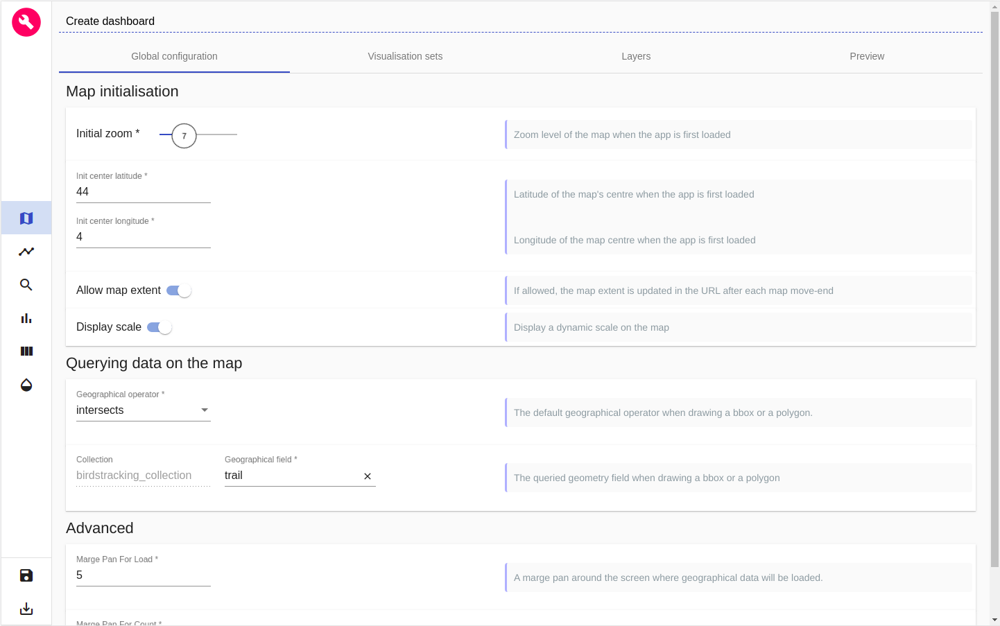
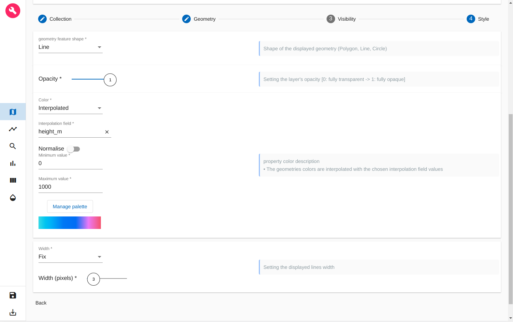
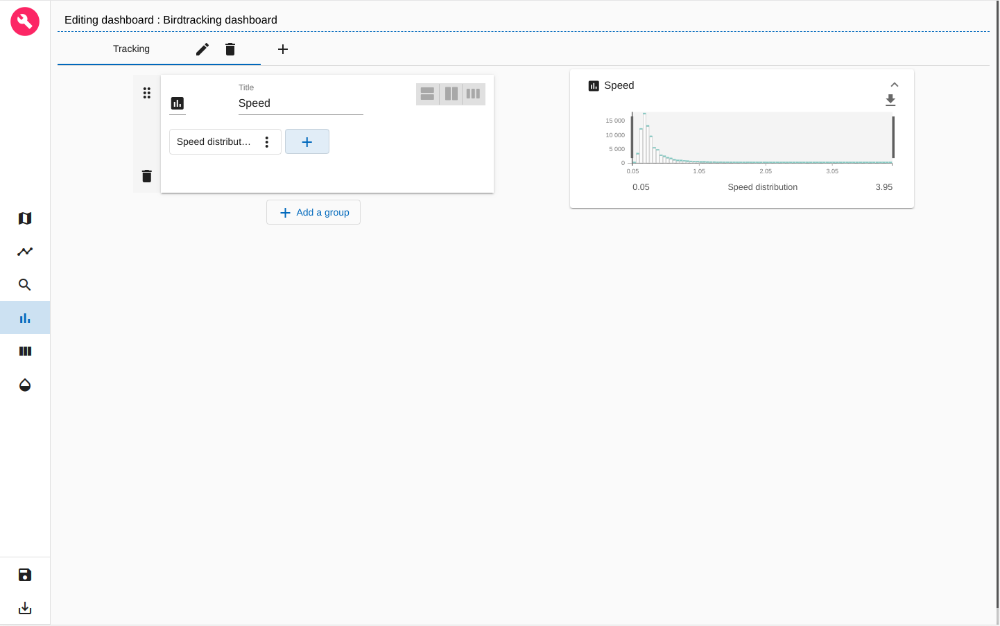

ARLAS-stack-birdstracking-tutorial
About this tutorial
What will you learn ?
With this tutorial, you'll be able to:
- start an ARLAS-Exploration stack
- Index some birdtracking data in Elasticsearch
- Reference the indexed birdtracking data in ARLAS
- Create a view of ARLAS-wui (a dashboard) to explore the birdtracking data using ARLAS-wui-hub and ARLAS-wui-builder
What will you need ?
You will need :
- docker & docker-compose
- curl
What will you get ?
Exploration app created in this tutorial
Birdstracking data
Let's explore some white storks migration data, provided by the Movebank Data Repository.
We built a subset of the dataset provided in this package by Movebank.
The subset is birdstracking_data.csv. It contains around 77 000 birds GPS positions described with 7 columns:
- identifier: An identifier of the emitted position
- name: Name of the moving bird
- location: Coordinates of the emitted position as longitudes/latitudes
- timestamp: Moment when the position is emitted
- speed_ms: Speed of the bird at this postion (m/s)
- height_m: Altitude of the birds at this position (m)
- trail: Linestring between the current position of the bird and the next one
A line of the csv file looks like:
| identifier | name | location | timestamp | speed_ms | height_m | trail |
|---|---|---|---|---|---|---|
| 009829e... | Redrunner + / DER AU057 (eobs 3339) | '{"lon":8.7,"lat":50.4}' | 1491922507 | 190.65 | 0.15 | '{"coordinates":[[8.7,50.4],[8.72,50.41]],"type":"LineString"}' |
Exploring Birdstracking data
We will explore this data using ARLAS.
0. Setup
- Create a repository dedicated to this tutorial
mkdir ARLAS-stack-birdstracking-tutorial
cd ARLAS-stack-birdstracking-tutorial
- Download the birdstracking data
curl -L -O "https://github.com/gisaia/ARLAS-stack-birdstracking-tutorial/raw/main/data/birdstracking_data.csv"
Check that birdstracking_data.csv file is downloaded
ls -l birdstracking_data.csv
- Download the ARLAS-Exploration-stack project and unzip it
(curl -L -O "https://github.com/gisaia/ARLAS-Exploration-stack/archive/develop.zip"; unzip develop.zip)
Check that the ARLAS-Exploration-stack-develop stack is downloaded
ls -l ARLAS-Exploration-stack-develop
Now our tutorial environment is set up.
1. Starting ARLAS Exploration Stack
./ARLAS-Exploration-stack-develop/start.sh
2. Indexing birdtracking data in Elasticsearch
- Create
birdstracking_indexindex in Elasticsearch withbirdtracking.es_mapping.jsonmapping file
curl https://raw.githubusercontent.com/gisaia/ARLAS-stack-birdstracking-tutorial/main/configs/birdtracking.es_mapping.json | \ curl -XPUT http://localhost:9200/birdstracking_index/?pretty \ -d @- \ -H 'Content-Type: application/json'
You can check that the index is successfuly created by running the following command
curl -XGET http://localhost:9200/birdstracking_index/_mapping?pretty
- Index data in
birdstracking_data.csvin Elasticsearch. For that, We need Logstash as a data processing pipeline that ingests data in Elasticsearch. So we will download it and untar it:
( wget https://artifacts.elastic.co/downloads/logstash/logstash-7.4.2.tar.gz; tar -xzf logstash-7.4.2.tar.gz )
- Logstash needs a configuration file (
birdtracking2es.logstash.conf) that indicates how to transform data from the CSV file and index it in Elasticsearch.
curl "https://raw.githubusercontent.com/gisaia/ARLAS-stack-birdstracking-tutorial/main/configs/birdtracking2es.logstash.conf" \ -o birdtracking2es.logstash.conf
- Now we can index the data:
cat birdstracking_data.csv | \ ./logstash-7.4.2/bin/logstash \ -f birdtracking2es.logstash.conf
- Check if 77 384 birds positions are indexed:
curl -XGET http://localhost:9200/birdstracking_index/_count?pretty
3. Declaring birdstracking_index in ARLAS
ARLAS-server interfaces with data indexed in Elasticsearch via a collection reference.
The collection references an identifier, a timestamp, and geographical fields which allows ARLAS-server to perform a spatial-temporal data analysis
- Create a Birdstracking collection in ARL AS
curl "https://raw.githubusercontent.com/gisaia/ARLAS-stack-birdstracking-tutorial/main/birdstracking_collection.json" | \ curl -X PUT \ --header 'Content-Type: application/json;charset=utf-8' \ --header 'Accept: application/json' \ "http://localhost:81/server/collections/birdstracking_collection?pretty=true" \ --data @-
- Check that the collection is created using the ARLAS-server
collections/{collection}
curl -X GET "http://localhost:81/server/collections/birdstracking_collection?pretty=true"
4. Create a dashbord to explore birdstracking data with ARLAS
ARLAS stack is up and running and we have birdstracking data available for exploration. We can now create our first dashboard composed of - a map to observe the birds trails, the positions' geographical distribution - a timeline presenting the number of birds positions over time - a search bar to look for birds by their names for instance - some widgets to analyse the data from another axis such as the speed distribution.
To do so, let's go to ARLAS-wui-hub at http://localhost:81/hub and create a new dashboard named Birdstracking dashboard

figure 0: Creation of a dashboard in ARLAS-wui-hub
After clicking on Create, you are automatically redirected to ARLAS-wui-builder to start configuring your dashboard.
Choosing the collection
The first thing we need to do is to tell ARLAS which collection of data we want to use to create our dashboard
figure 1: Choose collection
in our case we choose the birdtracking_collection
Map configuration
As a first step, I'll set the map at zoom level 7 and the map's center coordinates at Latitude=44° and Longitude=4°. This way, when loading my dashboard in ARLAS-wui, the map will be positionned over France.

figure 2: Map initialisation
For now, the map is empty. The first thing we want to find out is where the birds are passing by?
figure 3: Layers view
To do so, let's add a layer named Birds trails to visualise the birds paths.

figure 4: Adding a Gemetric features layer named 'Birds trails'
In the Geometry section (2nd section), choose the trail features geo-field

figure 5: Choosing the geometry field to display on the map
Now, let's define the layer's style. As a starter, we choose the best representation of our geometries: Birds trails are lines. We also choose a fixed color (blue for instance) and a fixed width of 3 pixels

figure 6: Customising 'Birds trails' style
After clicking on Save, our first layer is created

figure 7: New layer 'Birds trail' is created
We can go and preview the layer in Preview tab

figure 8: Preview of 'Birds trail' layer
We see now where the birds are passing by thanks to this layer
Timeline configuration
Let's find out the time period when these positions were emitted.
For that, let's define a timeline: a histogram that will represent the number of birds positions over time.
For the x-Axis we choose the timestamp field and for the y-Axis we choose Hits count: the number of positions in each bucket. We set 50 buckets in this example
figure 9: Defining a timeline
In the Render tab we can set a title for the timeline, date format and the histogram type. Let's choose bars histogram

figure 10: Timeline render
Search bar configuration
To define the search bar we can set - the placeholder string; - the field used to seach keywords - the field used to autocomplete the searched words

figure 11: Defining the search bar
Save the dashbord and start exploring in ARLAS-wui
Now we defined - 'Birds trails' layer in the map - the timeline - the search bar
Let's save this dashboard by clicking on the 'Disk' icon at the left-bottom of the page.
If we go back to ARLAS-wui-hub at http://localhost:81/hub, we'll find the Birdstracking dashboard created.
figure 12: List of created dashboards
We can now View it in ARLAS-wui
figure 13: View of dashboard in ARLAS-wui
Going further with the map
We now see the trails on the map but we can't distinguish the birds! Let's change that by setting the paths colors from the birds names.
Let's go back to the dashboard builder and edit 'Birds trails' layer

figure 14: Editing a layer
In the Style section, we choose Generated colors option that will automatically generates a hex color from the chosen field values. For our case, we choose name field
figure 15: Setting the trails colors by birds name
After saving the layer, we can preview it again and see that now we have two birds : - Niclas (green) - Redrunner (blue)

figure 16: Preview generated trails colors by birds names
On the other hand, it could be interesting to analyse the birds altitudes during their trajectories: where do they land? do they cross mountains ?
To answer this question, let's create a dedicated layer!
Before doing that, we will first create a Visualisation set, a space where to organise layers that have to be displayed/hidden together. For instance, the 'Birds trails' layer is put under the 'All layers' visualisation set
figure 17: List of visualisation sets
For our altitude layer, let's create a new visualisation set called 'Altitude'

figure 18: Adding a new visualisation set
Now let's create our new layer that will allow us to analyse the birds positions altitudes.

figure 19: Adding a new layer for birds positions altitude
in the Style section, we interpolate the trails colors with interpolation field values. In our case we interpolate the color with the height_m field.
We set the height_m values interval between 0 and 1000 meters and we choose a color palette

figure 20: Interpolating trails colors to positions altitudes
After saving this layer we can preview it in the Preview tab and start our analyse!

figure 21: Preview of birds trails according to the altitude
Geo Big Data
For this tutorial, we only have ~77 000 birds positions to explore. This allowed us to display the birds trails directly on the map.
But what to do in case we had millions of positions to display ?
It would be very difficult to display them all as it would be very heavy to request all that data at once and the browser will not be able to render as many features. We will end up loosing the user experience fluidity.
Most importantly, loading millions of birds positions on the map will not be necessarily understandable: we cannot derive clear and synthesized information from it.
That's why ARLAS proposes a geo-analytic view: we can aggregate the birds positions to a geographical grid and obtain a geographical distribution !
Let's create a dedicated layer for birds positions geographical distribution.
figure 22: Creating a geographical distribution layer
We choose to aggregate location geo-field to a geographical grid and we choose a fine granularity for this grid.
We will display on the map the grid's cells.
Let's define the style of these cells in Style section
figure 23: Styling the geographical distribution layer
We interpolate the cells colors to the number of birds positions in each cell. That's why we choose Hits count that we normalise and choose a color palette
After saving this layer, we can again visualise it and explore where the positions are geographically

figure 24: Birds positions geographical distribution
Analytics board
We focused on the geographical and temporal analysis. We can also explore other dimensions of the data.
Let's see what does the speed distribution of these positions looks like.
To do so we need to create a histogram. ARLAS proposes to organise all the histograms and other widgets in an analytics board.
We can split the analytics board into tabs. Let's create a tab called 'Tracking' where will add our Speed distribution histogram

figure 25: Creating a tab in Analytics board
Once the tab is created, we can add in it a group of widgets. Let's name it 'Speed'


figure 26: Creating a group in Analytics board tab
Let's now create our histogram

figure 27: Choosing a histogram for speed distribution
We can give a title to the Speed distribution histogram
For the x-Axis we choose speed_ms field and for the y-Axis we choose Hits count: the number of positions in each bucket. We set 70 buckets in this example
figure 28: Defining speed distribution histogram
When we save the histogram we automatically get a preview of it in the analytics board!

figure 29: Preview speed distribution histogram
We can now save the dashbord again using the 'Disk' icon at the left-bottom of the page and view it ARLAS-wui
figure 30: Exploring Birdstracking dashboard in ARLAS-wui
As you can see we created a simple dashboard to start exploring Birdstracking data!
Check out a more sophisticated dashboard about the birdstracking data that explores 6.8 millions birds positions in our demo space!
You can get inspired from our different demos to build other map layers and other widgets.